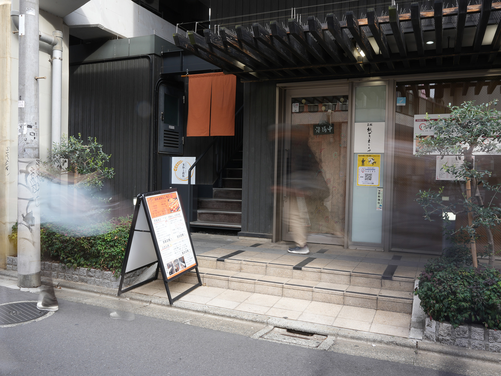
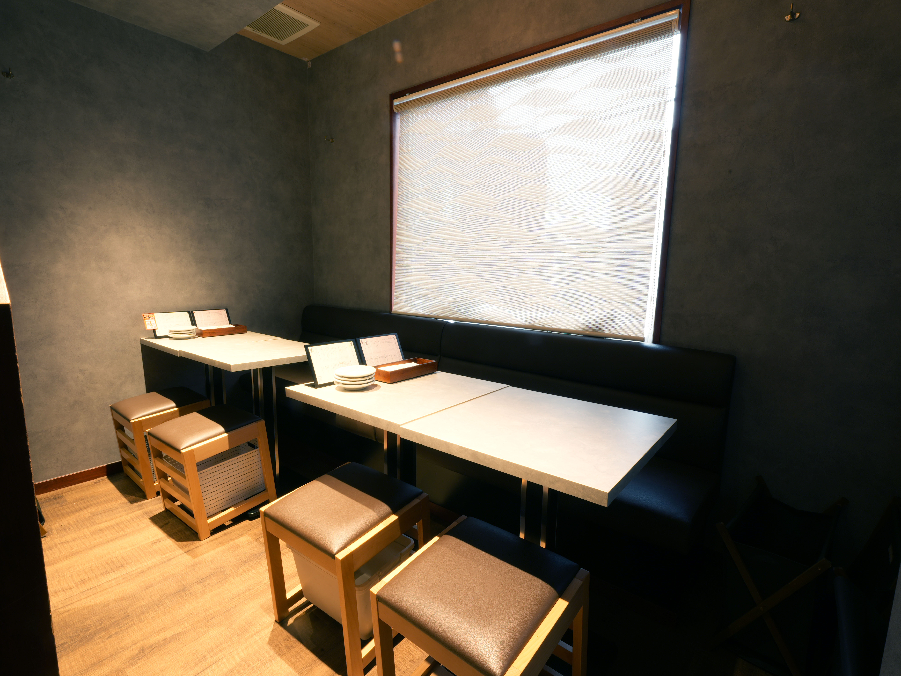

外観写真




店舗は2階にあります。
「◯◯コンビニ」まで来たらお電話ください。外観写真の位置からご案内します。
学芸大学駅から徒歩約4分です。
写真付きのルート案内を店舗ページ上部に掲載しています。
専用の駐車場・駐輪場はありません。
近隣のコインパーキング・駐輪場をご利用ください。
19:00〜21:00は混みやすい時間帯です。
ご来店が決まっている場合は、事前のご予約・お電話をおすすめします。